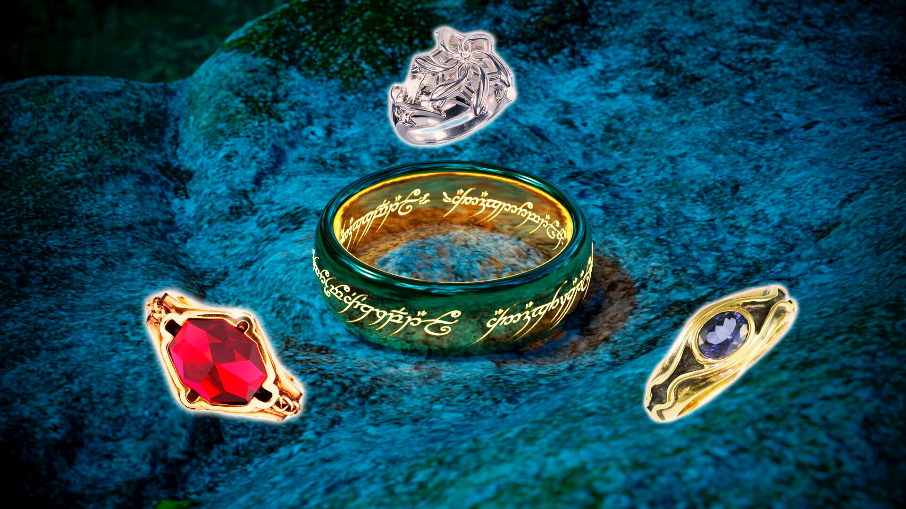
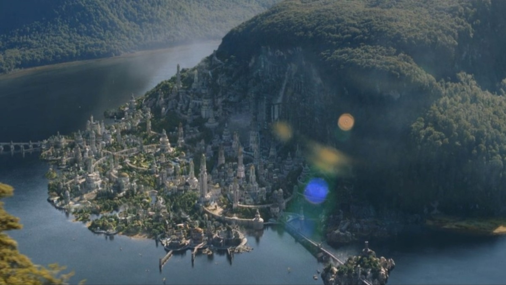
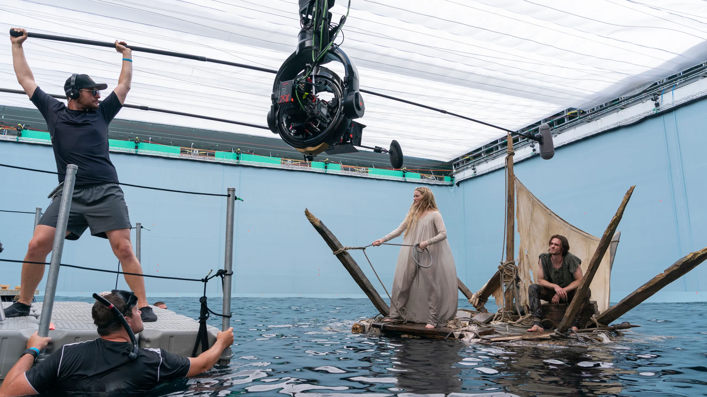
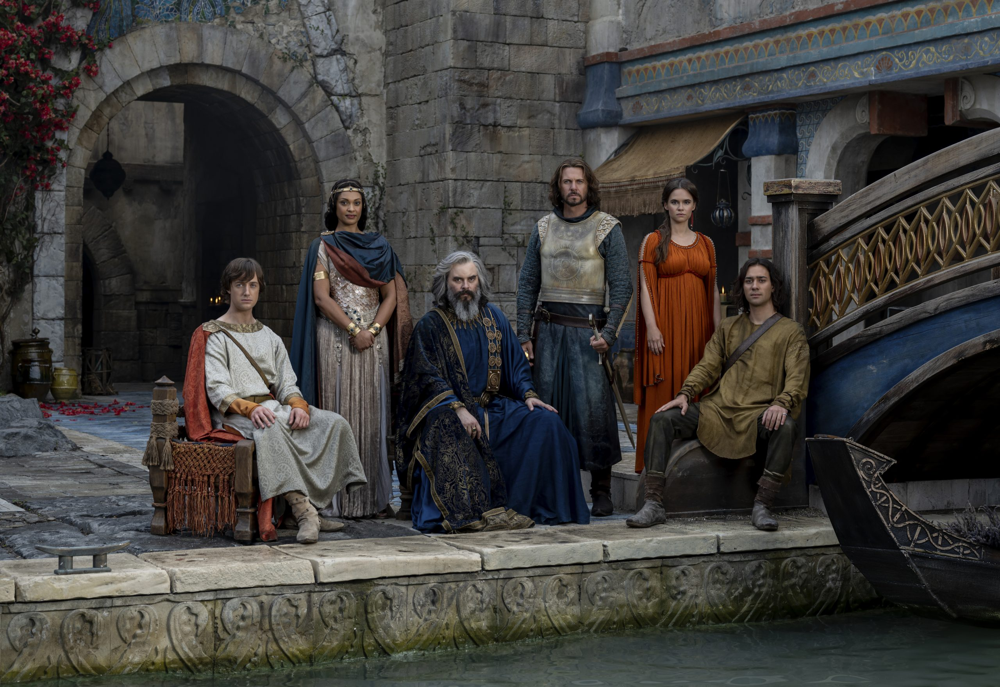

Sobre la serie

Miles de años antes de que Frodo y la Comunidad emprendieran su viaje para
destruir el Anillo Único, la Tierra Media vivió una era de esplendor y peligro. Durante la Segunda
Edad, reinos poderosos se levantaron, civilizaciones prosperaron y fuerzas oscuras comenzaron a
tomar forma.
"Los Anillos de Poder" narra el ascenso y caída de héroes y villanos, la forja de los anillos que
darían forma al destino del mundo, y el surgimiento del mal que marcaría para siempre la historia:
Sauron.
A lo largo de la serie, seguimos a Galadriel en su cruzada contra las sombras, exploramos el reino
de Númenor en su auge, conocemos a los enanos en la magnificencia de Khazad-dûm, y presenciamos cómo
las decisiones de elfos, hombres y enanos preparan el terreno para los conflictos eternos narrados
por Tolkien.
La narrativa de la serie se conecta con El Señor de los Anillos, mostrando el origen de los
elementos que marcarán la Tercera Edad: desde la creación de los Anillos hasta las traiciones que
dividirán a pueblos enteros
La producción de Los Anillos de Poder es un hito televisivo. Amazon adquirió los derechos por aproximadamente 250 millones de dólares, asegurando un compromiso de al menos cinco temporadas.


Locaciones
Temporada 1: filmada íntegramente en Nueva Zelanda, al igual que las trilogías de Peter Jackson, lo que permitió recrear paisajes icónicos y naturales.
Temporada 2: trasladada al Reino Unido, con rodajes en estudios de Bray (Maidenpead), Escocia y otras locaciones europeas.
Producción:
Presupuesto de la primera temporada: alrededor de 465 millones de dólares.
Considerada la serie más cara jamás producida.
Incluye más de 20 idiomas creados, cientos de sets, miles de extras y un equipo internacional de
técnicos y artistas.
.webp)
El proyecto fue liderado por los showrunners J.D. Payne y Patrick McKay, con
la participación de directores de renombre como J.A. Bayona y Wayne Che Yip.
